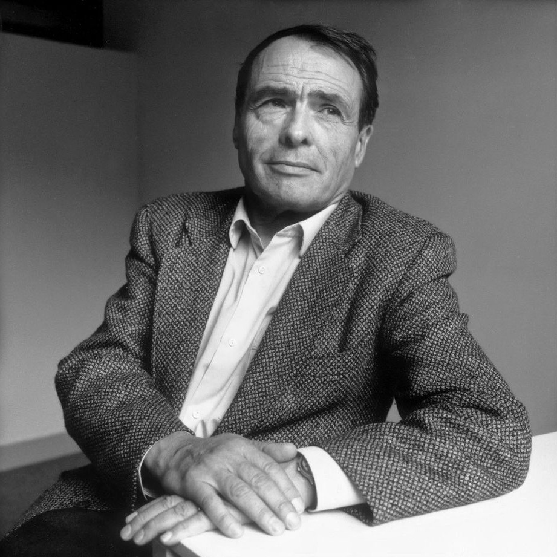
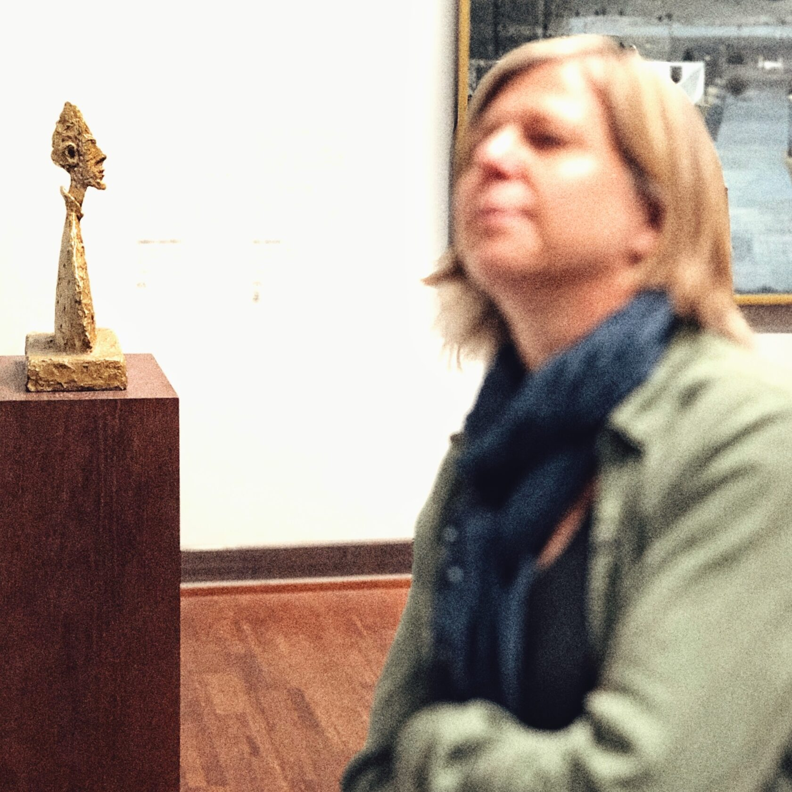

«Свет разума находится со стороны тех, кто стремится снять шоры с глаз». Пьер Бурдьё.
Как вы думаете, в каком мире мы живем? Нет, понятно, что ответов может быть миллион. Но так, глобально? Я имею ввиду, что мы, современные люди, живём не столько в так называемой реальности, сколько в мире культуры — в пространстве созданных человеком вещей, идей, форм, образов и понятий.
И этот мир, мир культуры, для нас не менее (а скорее всего и более) важен, чем мир, как бы объективной реальности. Мы тотально погружены в культуру вне зависимости от уровня нашего образования, возраста, профессии и уровня дохода. Именно в этом пространстве формируется наше мировоззрение, развёртываясь затем в деятельности и материализуясь в плодах и результатах.
Чтобы понять, как это всё влияет на нашу повседневную жизнь и достижения, давайте воспользуемся теорией Бурдьё. Пьер Бурдьё (один из самых известных современных мыслителей) создал сильную концепцию семейства капиталов, которая очень помогает в «разбирательстве» культуры и логики социальных взаимодействий. Предваряя некоторые возражения — я прекрасно знаю, что Бурдьё после своей смерти в 2002 году подрастерял популярность и приобрёл множество критиков (часто вполне обоснованных). Но я предлагаю взять его теорию как отправную точку в попытке понять логику и условия культурного развития.


Итак. Он выделяет три основных типа капитала: экономический, культурный и социальный. Экономический капитал проявляется в форме денег и прав собственности; культурный — в форме знаний и образовательных квалификаций; а социальный образуется за счет связей, статуса и влияния. Все типы капитала воздействуют друг на друга и могут конвертироваться, при определенных условиях, один в другой (как на общественном уровне, так и на личном).
Культурный капитал
Давайте остановимся на культурном капитале. Немного теории… это важно для понимания, как он реально работает в жизни и что с ним делать. Культурный капитал — это объём знаний, навыков и представлений (в виде понимания и внутренних аргументаций), который удалось наработать в течении жизни. Причём, что важно, это можно сделать только самостоятельно. «Подобно наращиванию физической мускулатуры или приобретению загара, это невозможно сделать через вторые руки» — так объясняет Бурдьё.
Однако характер приобретения может быть осознанным и неосознанным: в семьях, где уже имеется большой культурный капитал, ребенок начнёт его усваивать гораздо раньше, нежели в семье, которая не обладает данным капиталом, отсюда и вытекает скрытая форма передачи культурного капитала по наследству.
Кроме того, есть ещё объективированное и институционализированное состояние культурного капитала. Объективированное состояние проявляется в виде «вещей культуры», например коллекция картин, собранная семьей. Институционализированное состояние капитала проявляется в форме академических квалификаций, скажем звание доктора наук.
ВАЖНО: объем культурного капитала напрямую зависит от времени, которое человек может потратить на его приобретение. Это время обеспечивается поддержкой семьи или самостоятельно — то есть, как долго человек может быть свободен от экономической «гонки», сколько у него свободного времени, чтобы заниматься наработкой своего культурного капитала.
Это, в общем то очевидно: чтобы получить хорошее образование нужны деньги и время, чтобы научиться разбираться в опере, нужна практика (много слушать оперу), чтобы начать ориентироваться в культурных, философских и научных теориях, а тем паче, научиться ими пользоваться в жизни — нужен не один год и много сил.
Прежде чем рассматривать, что конкретно даёт нам культурный капитал, как влияет на карьеру, достижения, статус и качество жизни, надо прояснить один ключевой для всей теории Бурдьё термин — габитус.
Габитус
Габитус — это история человека, вписанная в его тело и ум, своеобразное единство биологического, социального и культурного в индивиде — сформированное воспитанием, окружением, близким социумом и структурирующее практику личности и ее представления. Габитус определяет (значительно) художественный вкус, манеру поведения, систему ценностей, и, даже предпочтения в еде и одежде. Это результат предшествующего опыта и фильтр последующего. По большому счёту, габитус — это картина мира, проявленная в предпочтениях, мыслях и поведении.
Можно сказать, что габитус — это как чувство собственного места: люди по-разному ощущают, на что они могут претендовать, а что не совсем для таких как они. И габитус заставляет их самих сортировать открывающиеся возможности на те, на которые они МОГУТ претендовать, и те, на которые НЕ МОГУТ.

Культурный капитал (его уровень и процесс развития) непосредственно влияет на габитус. То есть на то, ЧТО И КАК мы думаем в голове, ЧТО И КАК мы делаем в жизни, ЧТО И КАК мы добиваемся в результате.
Как это работает?
Итак, как это работает? Если представить наш разум по аналогии, как компьютер, то мозг — это железо, системный блок, а культурный капитал (знания, навыки и установки) — это софт, операционная система и набор программ. Компьютер будет тем лучше, чем мощнее его железо и, чем круче набор и уровень программ в операционной системе. С человеческим разумом тоже самое.
НО. Есть одно ключевое, просто зубодробительное отличие: в компьютерной технике софт и его обновление никак не влияют на железо — какое есть, такое есть. А вот в нашей голове всё по-другому: развитие культурного капитала напрямую влияет на анатомию мозга. Под воздействием научения, искусства, научных и культурных практик происходит физическое образование новых нейронных связей и функциональных систем их взаимодействия. Иначе говоря, трансформация «софта» не только изменяет набор программ и их уровень, но и воздействует на «железо», делая его мощнее!
В соответствии с теорией Константина Анохина (ведущего российского ученого в области мозга и сознания, директора Института перспективных исследований мозга МГУ) наш разум представляет собой гиперсеть функциональных систем, состоящих из оперонов (нейронных комплексов мозга, связанных функционально с разными частями организма, органами чувств и тд), квалонов (категориальных единиц субъективного опыта) и холонов (целостных единиц субъективного опыта). Эта гиперсеть называется КОГНИТОМ (по аналогии с геномом).
Так вот, этих оперонов и квалонов — миллионы, срабатывают и взаимодействуют они умопомрачительно сложным «макаром». Но, что важно для нас, так это то, что на включение функциональных систем и образование новых холонов ключевым образом влияют:
- культурный капитал (память, как объём накопленных знаний-навыков, через который как через фильтр, преломляясь проходят все психические импульсы);
- целеполагание субъекта (интерес или его отсутствие);
- ценностное отношение к действию (уважение или эмоциональное отрицание).
Интерес и уважение — тема отдельного разговора. А вот культурный капитал, локализованный в разных видах памяти и проявленный в габитусе — это как раз то, о чем мы говорим… и то, что непосредственно определяет нашу жизнь: мысли, намерения, способности и результаты.
Конечно, генетических, наследственных факторов никто не отменял. Но, во-первых, мы лично никак на них повлиять не можем (по крайне мере на данном этапе развития науки), а во-вторых, чем старше становится человек, тем меньшую роль играет наследственность и тем большую — личный вклад человека в свою историю.
Развитие культурного капитала
Лучшими способами развития культурного капитала является три сферы:
- Искусство (его восприятие и изучение);
- Образование (философия и науки);
- Творческая деятельность (творчество, бизнес, сложные професии).


Эти способы не зря расположены именно таким образом. И дело тут не в том, что я сам занимаюсь искусством (в неменьшей степени, кстати, я занимаюсь и философией и деятельностью в форме бизнеса). Просто у искусства есть одна особенность — оно действует автоматически, исподволь осуществляя в нас свои благие преобразования. Искусство «обязывает» нас воспринимать красоту и смыслы.
Эта своеобразная «диктатура» осуществляется через чувства, переживания и подспудное побуждение к осознанности и диалогу… с произведением, с самим собой, с другими людьми и идеями.
Так постепенно осознается и раскрывается особая интенциональная (внутренне-направленная на что-то) сущность «художественного»: УМ, ОБРАЗ, УЧИТЕЛЬ и ВРЕМЯ.
- УМ: Понимание того, что НЕпонимание — это следствие ограниченности картины мира (габитуса) в настоящий момент времени.
- ОБРАЗ: Принятие метафоры, как способа мышления, обладающего собственной волей. Самое главное качество образа в искусстве — это самодвижение, то есть способность образа «объяснять» себя в процессе своего создания автору и воссоздания — зрителю. Именно через самодвижение образа и происходит связь между зрителем, автором, произведением искусства и идеей.
- УЧИТЕЛЬ: Потребность в книгах и «правильных» людях, которые могут во всём в этом помочь.
- ВРЕМЯ: Готовность к длительному процессу постижения. Для того, чтобы развить свой культурный капитал, чтобы сформировать новые устойчивые нейронные связи в мозгу — нужно время.
Если представить нашу жизнь как культурно-историческую игру на биологической основе, то логично, что в этой игре есть определенные правила (собственно о них мы и говорили). Используя их, можно много изменить в своей действительности. Всеобщий культурный капитал в виде глобального семантического поля культуры постоянно воспроизводит себя в своих агентах, то есть в нас с вами. Это особая игра и участвуют в ней в современном мире все люди без исключения, хотят они того или нет…
Но вот выбор своей роли в этой игре ФАНТАЗИИ и РАССУДКА — остаётся всё же за нами!